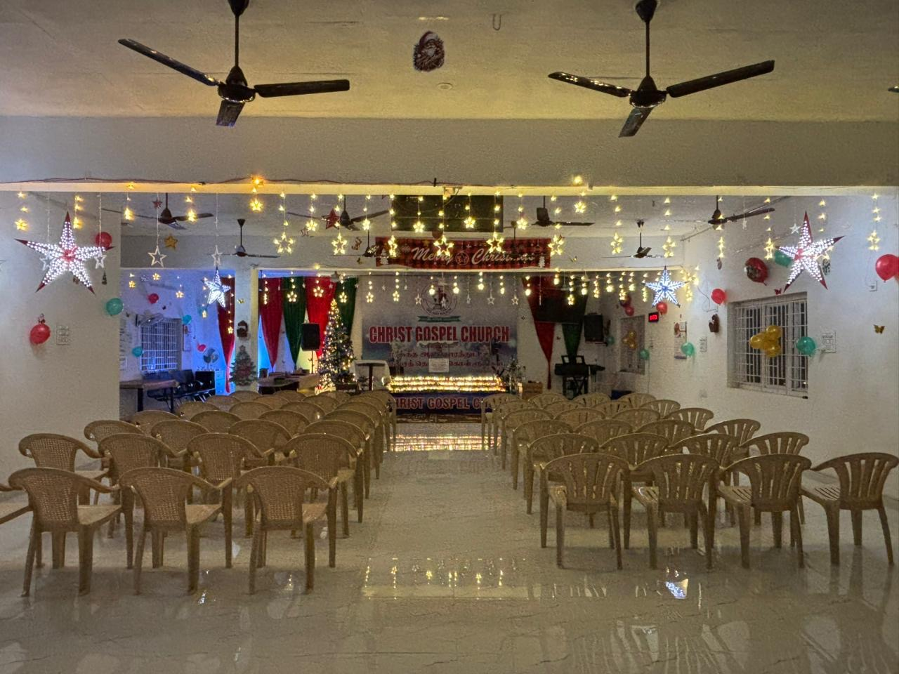

Calendar
The rhythm of our year.
Every week, every day, and the great days of the Christian year.
Every week
Sunday Service
8:00 to 11:00 AM, at the church and live on YouTube.
Every day
5-Minute Meditation
A short Tamil message from Rev. Dr. P. Chandran on YouTube.
Start of the month
Promise Word
A word from Scripture to carry through the month ahead.
Special services
Coming up.
Dates are fixed by the calendar. Times below are from the most recent service of each kind, so please call to confirm this year's time.
